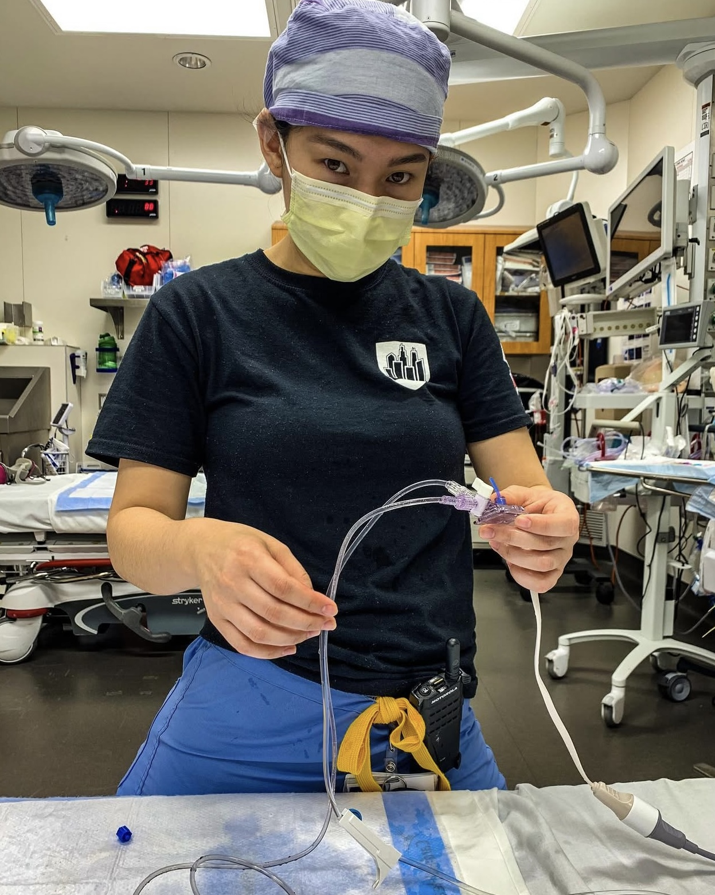

Get to Know Me
Hi, I'm Zoe Anelle Kurtzer, a former paramedic transitioning to the world of tech. I'm passionate about web development and programming. Currently, I’m focusing on:
- HTML & CSS: Crafting responsive websites
- JavaScript: Adding interactivity to websites
- Python: Exploring data and automation
- Java: Learning programming fundamentals
- Git & GitHub: Version control and collaboration
I'm also passionate about combining my medical knowledge with tech, especially in health-tech and data science. Check out my projects and feel free to reach out!
